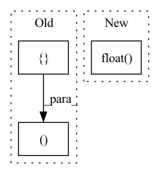

Pattern ID :244
Before Change
@override(ModelV2)
def forward(self, input_dict, state, seq_lens):
model_out, _ = self.model(input_dict, state, seq_lens)
return model_out, []
After Change
@override(ModelV2)
def forward(self, input_dict, state, seq_lens):
return input_dict["obs_flat"].float() , state
In pattern: SUPERPATTERN
Frequency: 3
Non-data size: 3
Instances Fragment ID: 880453
Project Name: replicable-marl/marllib
Commit Name: d339c3de863e3cae6fbfe67e503ff0953e2cd868
Time: 2022-03-03
Author: hhhusiyi@163.com
File Name: MetaDrive/model/torch_maddpg.py
M Class Name: MADDPGTorchModel
N Class Name: MADDPGTorchModel
M Method Name: forward(4)
N Method Name: forward(4)
M Parent Class: nn.Module,TorchModelV2
N Parent Class: nn.Module,TorchModelV2
M File Name: MetaDrive/model/torch_maddpg.py
N File Name: MetaDrive/model/torch_maddpg.py
M Start Line: 241
M End Line: 242
N Start Line: 238
N End Line: 238
Before Change
).t() == targets_row.expand(n, targets_row.shape[0])
neg_mask = ~pos_mask
// For each anchor, find the hardest positive and negative
dist_ap, dist_an = [], []
for i in range(n):
dist_ap.append(dist[i][pos_mask[i]].max().unsqueeze(0))
dist_an.append(dist[i][neg_mask[i]].min().unsqueeze(0))After Change
// hard examples mining
n, m = f.size(0), xbm_f.size(0)
identity_mat = labels.expand(m, n).t().eq(xbm_labels.expand(n, m)).float()
dist_ap, dist_an = hard_examples_mining(dist_mat, identity_mat)
// Compute ranking hinge loss
y = torch.ones_like(dist_an) Fragment ID: 880454
Project Name: thuml/transfer-learning-library
Commit Name: 0f8f51c4b2fac78edf87e29764e4da3deec6f65f
Time: 2021-10-14
Author: 57670068+tsingcbx99@users.noreply.github.com
File Name: common/vision/models/reid/loss.py
M Class Name: TripletLossXBM
N Class Name: TripletLossXBM
M Method Name: forward(5)
N Method Name: forward(5)
M Parent Class: nn.Module
N Parent Class: nn.Module
M File Name: common/vision/models/reid/loss.py
N File Name: common/vision/models/reid/loss.py
M Start Line: 132
M End Line: 152
N Start Line: 154
N End Line: 162
Before Change
@override(ModelV2)
def forward(self, input_dict, state, seq_lens):
model_out, _ = self.model(input_dict, state, seq_lens)
return model_out, []
After Change
@override(ModelV2)
def forward(self, input_dict, state, seq_lens):
return input_dict["obs_flat"].float() , state
Fragment ID: 880450
Project Name: replicable-marl/marllib
Commit Name: d339c3de863e3cae6fbfe67e503ff0953e2cd868
Time: 2022-03-03
Author: hhhusiyi@163.com
File Name: MPE/model/torch_maddpg.py
M Class Name: MADDPGTorchModel
N Class Name: MADDPGTorchModel
M Method Name: forward(4)
N Method Name: forward(4)
M Parent Class: nn.Module,TorchModelV2
N Parent Class: nn.Module,TorchModelV2
M File Name: MPE/model/torch_maddpg.py
N File Name: MPE/model/torch_maddpg.py
M Start Line: 237
M End Line: 238
N Start Line: 234
N End Line: 234